Edit a single value driven feature
When editing a synchronous feature that is driven by a single value, you can edit all faces of the feature, selected face(s) of the feature, or all faces in the model that are similar to the selected feature face.
The value edit box provides options to specify which faces to modify.
In the following examples, a round feature is used.
Single value driven features are rounds, equal offset chamfers, draft, thin walls, and break corner.
Edit a parent feature
-
Select a single value driven feature by selecting a face on the round feature or selecting a round feature in PathFinder.
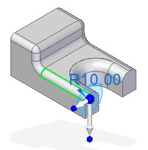
A value edit handle appears.
-
Click the value edit handle (D) to modify the round radius.
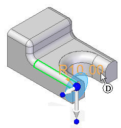
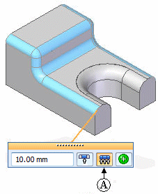
Notice all faces of the selected round feature highlight because the default face selection “All Feature Faces” (A) button is turned on.
-
Click in the edit box to enter a new radius.
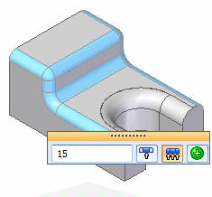
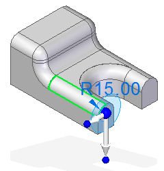
All faces of the parent round feature have the same value.
Edit all faces in the model similar to the selected parent feature
-
Select a single value driven feature by selecting a face on the round feature or selecting a round feature in PathFinder.
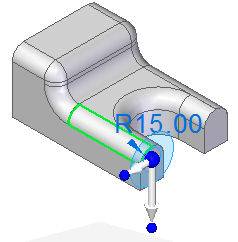
The value edit handle appears.
-
Click the value edit handle to modify the round radius.
-
On the value edit box, click the “Selection Manager” (B) button.
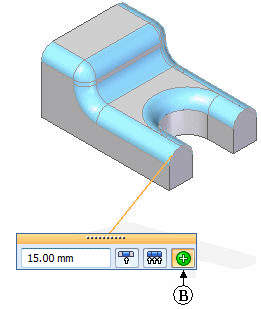
Notice all faces of the selected round parent feature highlight and all other faces in the model that have the same round radius value.
-
Click in the edit box to enter a new radius.
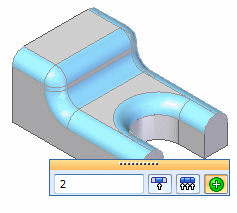
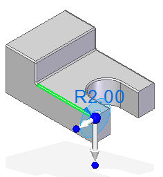
All faces of the round parent feature and similar round faces in the model have the same value.
Edit only selected faces
-
Select individual face(s) of a value driven feature.
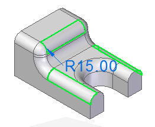
The value edit handle appears.
-
Click the value edit handle to modify the selected round faces. Click the Edit Only Selected Faces (C) button.
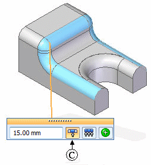
-
Click the value field in the edit box to enter a new radius.
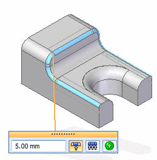
Notice only the selected faces and connected tangent round faces take on the new radius value.